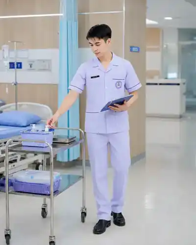
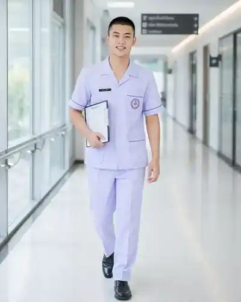

ฝึกทักษะงานดูแลผู้ป่วย
เน้นทักษะที่เกี่ยวข้องกับการปฏิบัติงานจริง
โรงเรียนรักษ์อุบลการบริบาล มุ่งเตรียมผู้เรียนให้มีความรู้ ทักษะ และความพร้อมสำหรับงานผู้ช่วยการพยาบาล ผ่านการเรียนและการฝึกปฏิบัติอย่างเป็นระบบ

เรียนควบคู่กับการฝึกทักษะ เพื่อเตรียมความพร้อมก่อนเข้าสู่การทำงาน
เน้นทักษะที่เกี่ยวข้องกับการปฏิบัติงานจริง
ค่อย ๆ พัฒนาจากความรู้พื้นฐานสู่การปฏิบัติ
สร้างความมั่นใจและความพร้อมก่อนออกทำงาน
มีช่องทางสอบถามและรับคำแนะนำจากโรงเรียน
เตรียมความพร้อมให้ผู้เรียนตั้งแต่การอยู่อาศัย เครื่องแต่งกาย ไปจนถึงอุปกรณ์ที่ใช้ระหว่างเรียนและฝึกปฏิบัติ
ช่วยลดภาระเรื่องที่พักระหว่างเรียน
ฟรีเครื่องแต่งกายสำหรับการเรียนของโรงเรียน
ฟรีสำหรับใช้ระหว่างการฝึกทักษะและปฏิบัติงาน
ฟรีอุปกรณ์ที่จำเป็นสำหรับการเรียนรู้ในหลักสูตร
ฟรีอุปกรณ์สำหรับฝึกทักษะด้านการดูแลสุขภาพ
ฟรีภาพการเรียนการสอนของโรงเรียนสะท้อนการฝึกทักษะในสภาพแวดล้อมด้านการดูแลผู้ป่วย เพื่อให้ผู้เรียนคุ้นเคยกับอุปกรณ์ ขั้นตอน และการทำงานอย่างมีระบบ
เรียนพื้นฐานที่จำเป็นทำความเข้าใจบทบาท การดูแลผู้ป่วย และการทำงานในสถานพยาบาล
ฝึกปฏิบัติด้วยอุปกรณ์จริงพัฒนาความคล่องตัวและความมั่นใจในการปฏิบัติงาน
ฝึกการสังเกตและบันทึกข้อมูลเรียนรู้การทำงานอย่างเป็นขั้นตอนและมีความรับผิดชอบ
เตรียมความพร้อมก่อนเข้าสู่งานเสริมบุคลิกภาพ วินัย และทักษะการทำงานร่วมกับผู้อื่น

เครื่องแบบของโรงเรียนและบรรยากาศการเรียนช่วยสร้างความเป็นระเบียบ ความเป็นมืออาชีพ และความพร้อมสำหรับสายงานดูแลสุขภาพ
เครื่องแบบสีม่วงอ่อนของโรงเรียน
สุภาพ เรียบร้อย และเหมาะกับการฝึกปฏิบัติ
รองรับความเหมาะสมด้านการแต่งกาย
เรียนรู้ความพร้อมและความเป็นระเบียบในการทำงาน
ใช้สำหรับกิจกรรมและการเรียนที่เหมาะสม
ผู้เรียนสามารถนำความรู้และทักษะไปเตรียมตัวสำหรับงานด้านการดูแลสุขภาพในสถานที่หลายรูปแบบ ตามคุณสมบัติและเงื่อนไขของแต่ละสถานประกอบการ
สอบถามรอบเรียนและรายละเอียดการสมัครได้ที่หมายเลขเดียวกันทั้งสองสาขา
รายละเอียดบางส่วน เช่น รอบเปิดเรียนและค่าใช้จ่าย อาจเปลี่ยนแปลงตามรอบการรับสมัคร สามารถสอบถามเจ้าหน้าที่ได้โดยตรง
ระยะเวลาเรียนของโรงเรียนกำหนดไว้ประมาณ 4–6 เดือน โดยรายละเอียดตารางเรียนและช่วงฝึกปฏิบัติสามารถสอบถามตามรอบที่เปิดรับสมัครได้
สวัสดิการฟรีที่แจ้งไว้ ได้แก่ หอพัก ชุดเรียน ชุดฝึกปฏิบัติงาน อุปกรณ์การเรียน และอุปกรณ์การแพทย์
มี 2 สาขา ได้แก่ สาขาอุบลราชธานี และสาขาหาดใหญ่ จังหวัดสงขลา
โทร 088-5807909 หรือเพิ่ม LINE ด้วย ID 0885807909 เพื่อสอบถามรอบเรียนและขั้นตอนการสมัคร
สอบถามรายละเอียดรอบเรียน สาขา และการสมัครกับเจ้าหน้าที่โรงเรียนได้โดยตรง